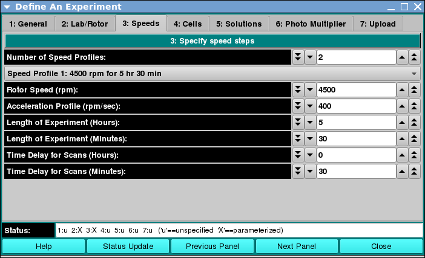

Create Experiment - Speed Steps Panel:

Using this panel, you can define one or more speed steps
for the experiment. For each speed step, a target rotor speed
in revolutions per minute must be defined. An acceleration
in RPM per second for the experiment start or the transition
from the previous step is declared. The duration of the
experiment at the given speed and a delay between start or
previous step are specified. These last two are given
separately in hours and minutes.
As with all panels, a set of tabs allows you to navigate to
other panels in order to perform specialized subtasks relating
to experiment creation. Links to and summaries of the panels are
given in the final section of this page.
Dialog Items:
- Number of Speed Profiles: Select a counter value that
specifies the number of constant rotor speeds to be used for
the duration of the experiment. Most often, this will be "1".
- (step description) This pull-down menu selection sets
the speed step for which the speed and duration to follow apply.
- Rotor Speed (rpm): Select a counter value to specify the rotor
speed for the speed step.
- Acceleration Profile (rpm_sec): Select an acceleration value for
the transition from zero speed or from the speed of the previous step.
- Length of Experiment (Hours): Specify the duration in hours of
the portion of the experiment at the current rotor speed.
- Length of Experiment (Minutes): Specify the residual minutes
of duration of the portion of the experiment at the current rotor speed.
This specification may be a floating point value.
- Time Delay for Scans (Hours): Specify the duration in hours of
the portion of the experiment spent in transitioning from zero speed or
the previous speed to the current constant rotor speed.
- Time Delay for Scans (Minutes): Specify the residual minutes
of duration of the portion of the experiment spent in transitioning from
zero speed or the previous speed to the current constant rotor speed.
This specification may be a floating point value.
Shared Dialog Items:
A panel status box and multiple buttons are shared by all panels.
The General tab help page
has detailed explanations of these items.
Panel Tab Options:
In each panel, tabs are visible at the top of the window to enable the
user to move to another panel, to perform specific experiment subtasks.
- 1: General
A panel whose primary purpose is to specify the experiment run ID (a
description string), select a parent project name, and possibly change
data source (database or local disk) or database investigator name.
- 2: Lab/Rotor
A panel whose primary purpose is to select the Laboratory, Rotor, and
Calibration values for the experiment.
- 3: Speeds
A panel whose primary primary purpose is to specify one or more speed steps.
For each step, speeds and durations may be given.
- 4: Cells
A panel whose primary purpose is to select the centerpieces (or
counterbalance) for the cells, along with a quartz/sapphire windows
selection.
- 5: Solutions
A panel whose primary purpose is to specify the solution to be used
in each cell/channel.
- 6: Photo Multiplier
A panel whose primary purpose is to define extinction profiles and the
implied photo multiplier voltage at each wavelength.
- 7: Upload
A panel whose primary purpose is to engineer the creation of an
experiment-defining JSON string and upload it to an Optima XLA
database.
 Manual
Manual